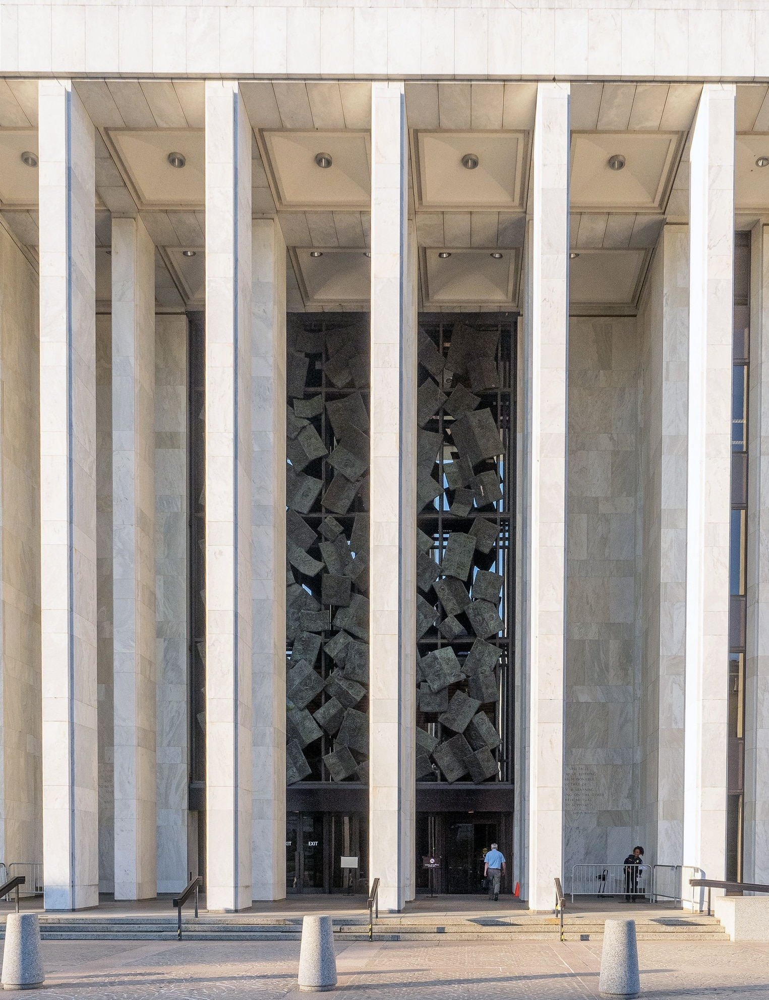
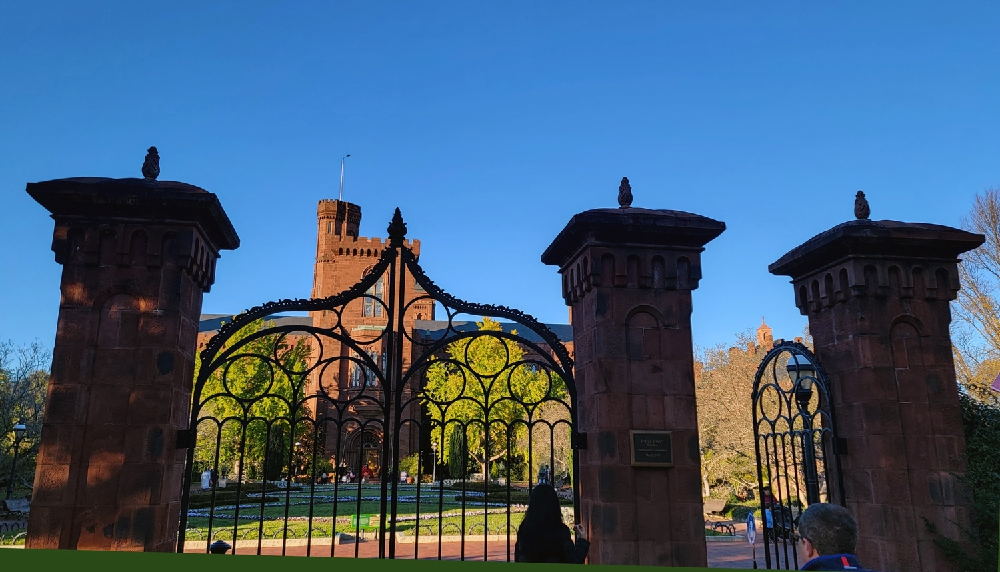

01
무엇을 찍나
사물의 앞면보다 뒷면, 연결부, 덧댐, 임시 고정, 낡음과 새것이 만나는 지점을 찍으세요.
이번 과제는 도시를 “예쁜 풍경”이나 “데이터로 정리된 시스템”으로만 보지 않고, 실제로 그 장소를 버티게 하는 표면, 수리, 시간의 층위, 그리고 몸의 감각을 읽어내는 연습입니다. 아래 세 글에서 가져온 번역 발췌와 사진을 먼저 읽고, 그다음 자신이 걸을 장소를 떠올려 보세요.
아래 네 가지를 기억하면 과제 방향이 훨씬 선명해집니다. 이번 과제는 관광 사진이나 일기장이 아니라, 도시의 작동 방식과 감각을 읽는 짧은 현장 비평입니다.
사물의 앞면보다 뒷면, 연결부, 덧댐, 임시 고정, 낡음과 새것이 만나는 지점을 찍으세요.
장소 묘사만 하지 말고, 그 장면이 기술·유지보수·시간·권력·감각과 어떻게 연결되는지 써야 합니다.
이론을 길게 요약하기보다, 읽은 개념을 현장에 적용해 자기 관찰을 해석하는 쪽이 더 중요합니다.
아래 세 글에서 마음에 남는 문장과 이미지를 하나씩 골라, 자신의 도시 관찰로 옮겨보세요.
Mattern은 도시를 유지시키는 것은 혁신의 반짝임이 아니라, 고치고 닦고 메우고 연결하는 반복적 노동이라고 말합니다.
이 글은 “세계가 어떻게 무너지고 있는가”보다 “세계가 어떻게 다시 조립되는가”를 보라고 요구합니다. 도시를 읽을 때도 마찬가지입니다. 우리가 보는 표면 뒤에는 언제나 누군가의 수리, 청소, 관리, 보수의 노동이 있습니다.


우리가 정말 연구해야 하는 것은 세계가 어떻게 다시 이어 붙여지는가이다. 내가 말하는 것은 새로운 공직자의 당선이나 새로운 기술의 출시가 아니라, 유지보수와 돌봄, 수리의 매일매일의 노동이다. 스티븐 잭슨의 이제는 고전이 된 글 「수리를 다시 생각하기」는 사회와 기술의 관계를 생각할 때 새로움과 성장, 진보보다 침식과 고장, 부패를 출발점으로 삼자고 제안한다. 그가 말하는 ‘부서진 세계 사고’는, 안정성이 유지되도록 만드는 지속적 활동들과 원심력 같은 압력 속에서도 삶을 지탱하는 미묘한 수리의 기술들에 대한 깊은 경탄과 짝을 이룬다.
건축, 도시연구, 노동사, 발전경제학, 정보과학처럼 여러 학문과 실천 영역에서 유지보수는 이론적 틀, 윤리, 방법론, 정치적 의제로 새롭게 주목받고 있다. 이 탐구가 흥미로운 이유는 학문과 실천의 경계가 흐려지기 때문이다. 유지보수를 연구하는 일 자체가 하나의 유지보수 행위가 된다. 이 문헌의 빈틈을 메우고 서로 다른 분야 사이에 연결을 그어 넣는 일은 곧 수리이자 돌봄이다. 실타래를 이어 붙이고 구멍을 메우며 조용한 목소리를 증폭하는 일이다.
도시를 유지하는 것은 거대한 혁신 프로젝트보다, 보이지 않는 작은 수리와 반복적 노동인 경우가 더 많다.
그러나 이런 거시경제적 시각은 세계가 우리 주변에서 매일매일 고쳐지고 있다는 현상적 현실을 가려 버린다. 창문 청소 노동자는 거리 위 높은 곳에서 일하고, 케이블 설치 노동자는 그 아래에서 일한다. 교량 도장공은 소금기 섞인 공기와 배기가스에 맞서 싸운다. 스리프트의 말처럼 현대 도시 거주자는 끊임없는 수리와 유지보수의 웅웅거림 속에 둘러싸여 있다. 우리는 착암기의 소리와 도로 청소차의 드론 같은 소리를 듣고, 도시 주변부에서는 자동차 수리와 폐기물 처리의 금속성 소음과 유압음까지 듣는다. 심지어 빈 땅 위에 새 건물이 올라가는 공사장의 소음조차도 하나의 수선 행위일 수 있다.
이 세 문단은 도시를 새것의 집합이 아니라 끊임없이 붙들리고 고쳐지는 구조로 보게 만듭니다. 과제에서는 완성된 외관보다 테이프, 덧댐, 임시 배선, 보수 흔적, 청소와 관리의 장면을 찍고, 그 장면이 어떤 노동 덕분에 유지되는지 해석하면 됩니다.
Milligan은 풍경과 인프라가 단순한 배경이 아니라, 자연과 인간의 시간을 빠르게 하거나 늦추는 장치라고 설명합니다.
이 글에서 중요한 질문은 “이 장소는 무엇을 빠르게 만들고, 무엇을 느리게 만드는가?”입니다. 길, 제방, 수로, 산책로, 재개발 구역은 모두 시간을 조직하는 장치로 읽힐 수 있습니다.


어떤 의미에서 우리는 시간 자체를 다시 빚어 왔고, 그것을 우리의 공간적 인프라 실천의 함수로 만들어 왔다. 우리가 문자 그대로 ‘시간의 역할’을 할 수는 없더라도, 우리는 시간을 속이려 한다. 환경의 리듬과 순환을 바꾸고, 물질의 흐름을 안무하듯 조정하는 것이다. 그러나 결국 속는 쪽은 우리다. 세계는 알려진 존재들과 알려지지 않은 존재들로 가득하며, 그들은 우리의 설계 의도에 복종하지 않기 때문이다.
풍경의 과정을 빠르게 하거나 늦추는 일이 오늘의 설계 과제라면, 우리에게는 더 나은 개념적 도구와 실천이 필요하다. 적어도 나는 그것이 필요하다. 잭슨을 따라가며 나는 설계자가 시간 변형의 지형, 곧 가속되고 감속된 풍경 안에서 어떻게 민감하게 작업할 수 있을지를 생각해 왔다. 이 용어를 이해하려면 그것이 실제로 작동하는 장면을 봐야 하므로, 먼저 하나의 특정한 하천과 그 변형된 지형으로 가 보자.
풍경은 단지 공간이 아니라, 여러 시간들이 겹쳐 기록된 장면이다.
바버라 애덤은 『현대성의 타임스케이프』에서 시간, 공간, 환경 위험 사이의 관계를 탐구하며 이렇게 쓴다. 풍경은 현실을 생성하는 활동의 기록이고, 삶과 거주의 연대기다. 풍경을 이루는 눈에 보이는 현상들 속에는 보이지 않는 구성적 활동이 피할 수 없이 박혀 있다. 산업 오염의 끈질기고 은밀한 효과에 주목한 애덤은 지질학적, 생물학적, 기술적, 생태학적, 기후적, 사회적, 정치적 시간성들이 이 연대기 안에 새겨져 있다고 본다. 풍경은 그것을 존재하게 만든 내재적 힘들과 상호의존적이고 우연적인 상호작용의 이야기를 들려준다.
이 문단들은 길, 수로, 계단, 펜스 같은 구조물을 단순한 배경이 아니라 시간의 속도를 조절하는 장치로 보게 합니다. 과제에서는 한 장소에서 무엇이 빨라지고 무엇이 느려지는지, 그리고 그 속도 차이가 누구에게 유리하거나 불리한지 읽어 내면 됩니다.
Folarin은 도시를 객관적 배경이 아니라, 한 사람이 욕망과 불안, 문화적 어색함, 가능성을 겪는 감각의 장면으로 씁니다.
이 글은 도시를 바라보는 시선을 바꿔 줍니다. 도시의 건물이나 제도만이 아니라, 그 도시가 한 사람에게 어떤 리듬과 감정을 만들어내는지까지 읽어야 한다는 점을 보여줍니다.



런던에서의 마지막 시기에 나는 워싱턴에 집착하게 되었다. 그전까지 내 공상은 늘 뉴욕에 붙들려 있었고, 돈이 모이는 순간 그곳으로 가겠다고 여러 해 동안 다짐해 왔다. 나는 작가와 예술가의 공동체를 만나 그들 사이에 들어갈 것이고, 작고 어두운 공간에서 내 글을 읽기 시작할 것이며, 내 재능에 대한 소문이 퍼져 나갈 것이라고 상상했다. 지하철과 택시, 마천루 로비에서 반복될 refrain은 하나일 것이라고 생각했다. “대체 저 사람은 어디서 나타난 거지?”
그러나 그 만족스러운 공상에는 빠져 있는 것이 있었다. 런던에서 나는 정책 분야에서 일했고, 낮에는 어떤 입법 조치를 다른 입법 조치 대신 채택할 때의 함의를 두고 치열한 대화를 나눴으며, 저녁에는 소설을 읽고 이미지와 연극을 보았다. 나는 예술과 정책이 서로 얽혀 있다고 생각하게 되었다. 두 영역 모두 현실을 형성하는 일과 근본적으로 관련되어 있으며, 예술가와 정책결정자라는 소수의 사람들이 어떤 방식으로든 공간과 시간을 배열할 힘을 얻었다고 믿게 되었다. 나는 예술이 세계를 이해하는 방식을, 정치는 우리가 사는 세계 자체를 형성한다고 믿었다.
도시는 내 바깥의 배경이 아니라, 나의 리듬과 감정을 다시 조직하는 환경이기도 하다.
나는 내가 소도시 출신 아이라는 생각을 한 번도 해 본 적이 없었지만, D.C.에서 며칠을 보낸 뒤에야 내가 그런 사람이었음을 깨달았다. 그래서 나는 이 도시를 견딜 수 있는 크기로 줄여 주는 규칙적인 일과를 만들었다. 매일 아침 하워드 대학교 기숙사에서 일어나 지하철역까지 걸어가고, 그린 라인을 타고 L’Enfant Plaza까지 간 다음 다시 Capitol South로 이동해 사무실로 갔다. 일이 끝나면 반대로 돌아왔고, 밤에는 플로리다와 조지아 애비뉴 모퉁이에서 흘러나오는 go-go 음악을 들으며 잠들었다. 이런 반복이 도시를 이해 가능하게 만들었다.
이 문단들은 도시를 제도나 건물의 목록이 아니라, 한 사람이 욕망과 불안, 기대와 리듬을 몸으로 겪는 환경으로 읽게 합니다. 과제에서는 어떤 장소가 왜 위압적이었는지, 어떤 경계에서 몸의 속도와 감정이 달라졌는지까지 기록하면 됩니다.


이 페이지를 다 읽고 나면, 어디를 걸을지와 무엇을 찍을지가 어느 정도 정리되어야 합니다. 마지막으로 제출 형식을 다시 확인하세요.
사진 3-5장을 포함한 A4 3페이지 내외의 짧은 에세이를 PDF로 제출합니다. 공백 포함 2,000자 이상을 권장합니다.
다음 주까지 계획서를 제출하면 1점 가산됩니다. 계획서는 200-300단어로, 자신이 어디서 무엇을 볼 예정인지 구체적으로 적어야 합니다.
| Grade | Score | What It Means |
|---|---|---|
| A | 30 | 사진과 글이 긴밀히 연결되고, 수업 개념을 자기 관찰 속에 설득력 있게 적용했다. 단순 묘사를 넘어서는 통찰이 있다. |
| B | 27 | 현장 기록은 성실하고 분석도 적절하지만, 개념 활용이 요약 수준에 머물거나 해석의 밀도가 다소 약하다. |
| C | 24 | 사진과 글은 연결되지만, 이론적 해석보다 감상문이나 산책기 비중이 높다. |
| D | 21 | 형식은 갖추었지만, 도시를 익숙한 일반론으로만 설명하고 유지보수·시간·감각의 층위를 충분히 읽어내지 못했다. |
| E | 18 | 제출은 했지만 과제의 핵심 질문을 충분히 이해하지 못했거나 내용이 매우 불성실하다. |